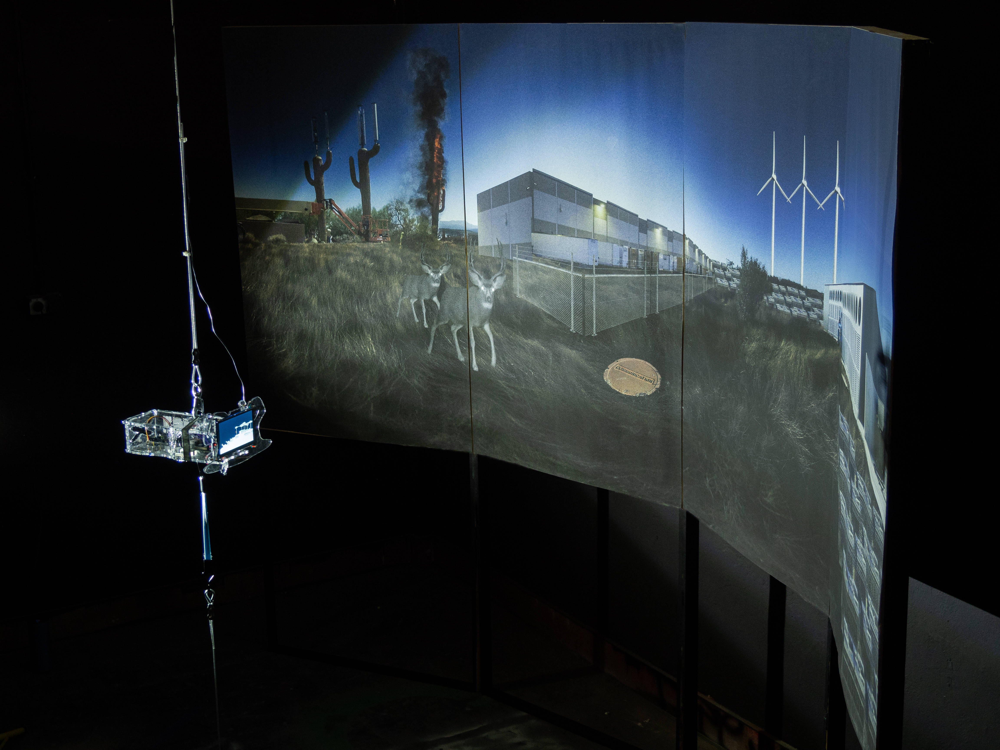
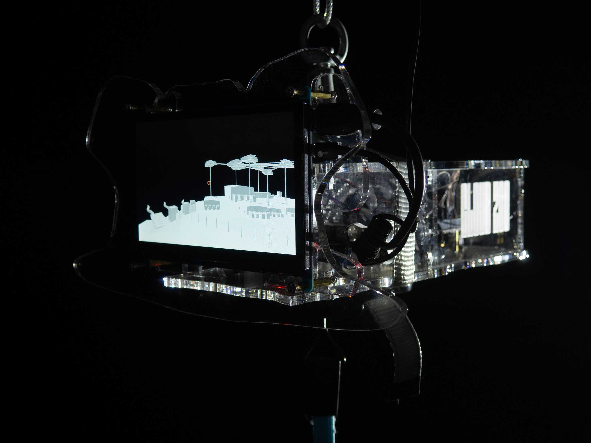
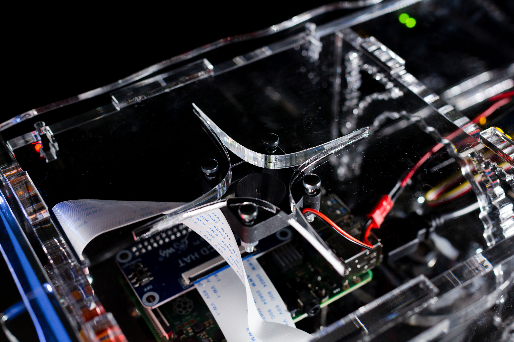
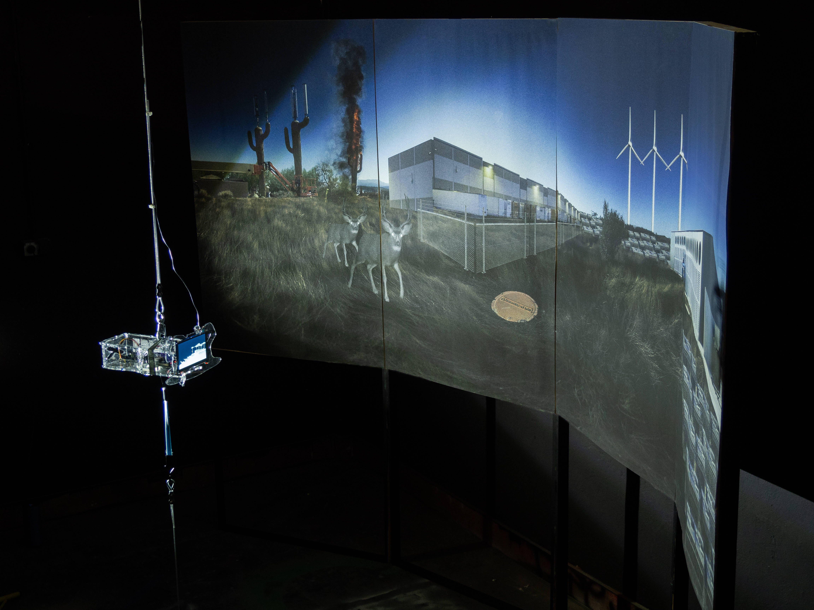
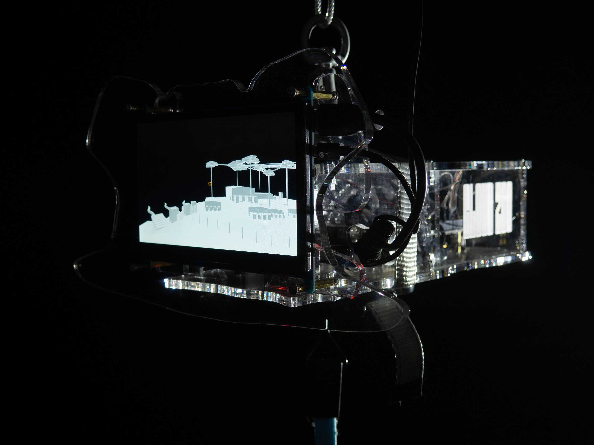
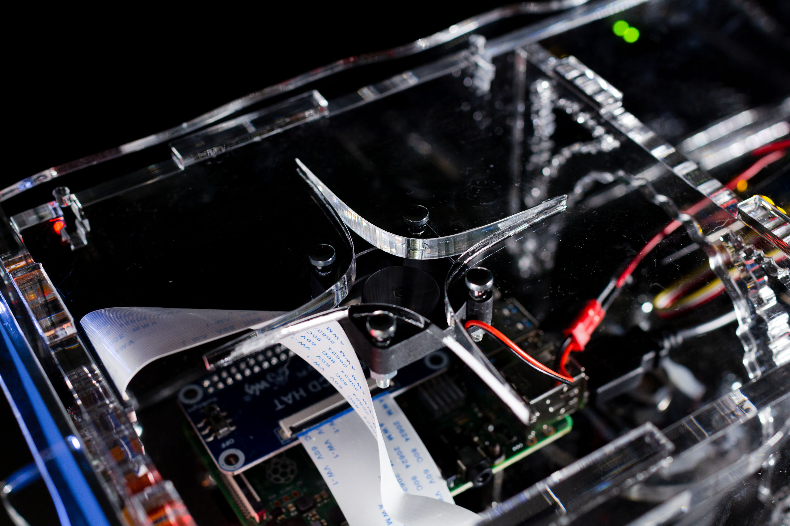

2020CLOUD ZOO
Royal Academy of Arts - MA Graduation Project
- interactive installation
- research
- data infrastructures
The Cloud is both everywhere and somewhere. It is both a global phenomenon, with its worldwide network
of layered infrastructures, and a composition of local physical elements, which are
affecting - and are affected by - their surroundings.
Exploiting the weaknesses of its physicality can defy the mythology of the Cloud, revealing how ironic and earthly
it is, thus reducing the immense hierarchical gap that separates us – Users – from tech corporations.
Cloud Zoo is an interactive installation that functions as a collateral reading of the Cloud’s structure through its
surroundings.
It is a semi-fictional diorama where nature interacts and merges with the physical body of the Cloud,
creating a new landscape of unexpected connections, defying geographical limitations.
The goal is to reduce the seemingly infinite size of the digital realm to a scale that is
more relatable to humans, exploiting its own physicality.
 




